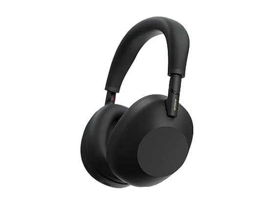
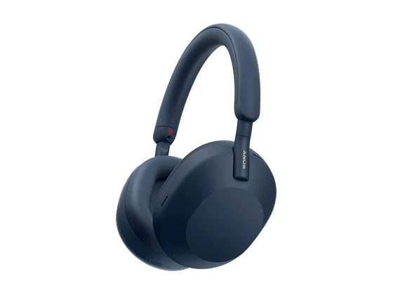
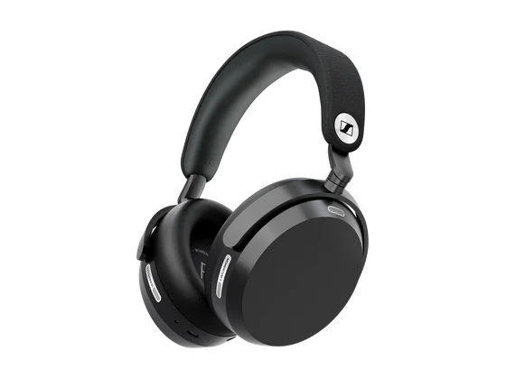
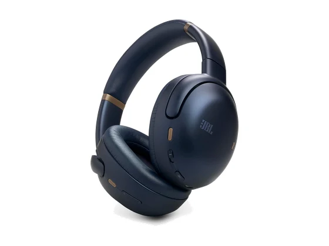
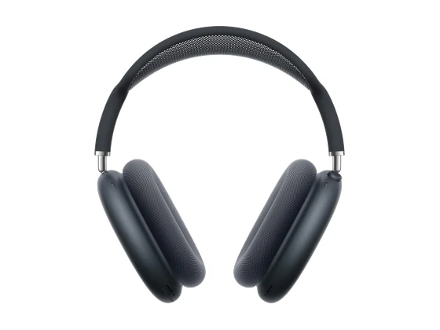
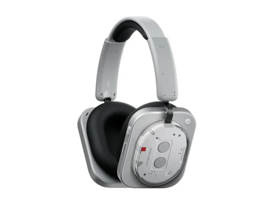
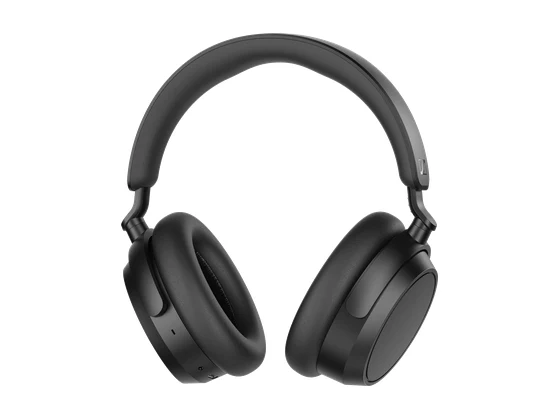
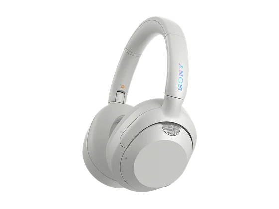

#1notre choixLe choix de la bande
ANC adaptative · 80 h · Bluetooth 6.0
Le meilleur compromis de la sélection : bien noté par la presse, très léger et confortable, avec une autonomie annoncée de 80 heures, pour 149 €. Les basses sont un peu appuyées et l'ANC reste moyenne.
8,4/10 6 notes presse
env. 150 €prix indicatif#2sur 10Référence ANC

ANC référence · Hi-Res · 30 h
La référence des casques à réduction de bruit : un ANC de premier plan, un son abouti et un confort amélioré. Prix en hausse et batterie sans exceptionnel.
8,6/10 16 notes presse
env. 380 €prix indicatif#3sur 10Prix en baisse

ANC · 30 h · appels cristallins
Le modèle précédent de Sony, toujours excellent et nettement moins cher qu'à sa sortie : très confortable, avec une des meilleures réductions de bruit. Il ne se plie plus aussi compact.
8,4/10 38 notes presse
env. 250 €prix indicatif#4sur 10Son audiophile

Batterie remplaçable · Dolby Atmos · 57 h
Un son de grande classe, une excellente qualité de micro et une batterie remplaçable. L'ANC reste un cran derrière Bose et Sony, et le casque ne se plie pas entièrement.
8,3/10 10 notes presse
env. 400 €prix indicatif#5sur 10Autonomie

ANC adaptative · 70 h · Spatial 360
Un casque premium bien équipé : un son puissant et équilibré, une réduction de bruit efficace et 70 heures d'autonomie. Plusieurs réglages passent par l'application.
8,2/10 11 notes presse
env. 240 €prix indicatif#6sur 10Pour iPhone

ANC · audio spatial · USB-C
Le casque premium d'Apple : une réduction de bruit très efficace, une signature sonore plus neutre et une excellente isolation. Prix très élevé, poids important et autonomie un peu juste.
8,2/10 10 notes presse
env. 550 €prix indicatif#7sur 10Design KEF

Son KEF · LDAC · 80 h
Un casque au look original, réglé par KEF : une scène sonore ample, une réduction de bruit au niveau des meilleurs et une grosse autonomie, pour 174 €. Le micro est faible en milieu bruyant.
8,1/10 13 notes presse
env. 170 €prix indicatif#8sur 10Valeur sûre

ANC hybride · 50 h
Un casque solide et bien noté par la presse : bonne réduction de bruit, son très correct et 50 heures d'autonomie. Les aigus manquent de précision et le serrage peut gêner.
7,9/10 22 notes presse
env. 150 €prix indicatif#9sur 10Basses puissantes

ULT Power Sound · basses · 30 h
Un casque pensé pour les basses, confortable et pliable, avec une bonne réduction de bruit. Le son est déséquilibré en réglage standard et l'USB-C n'est pas utilisable pour l'audio.
7,7/10 18 notes presse
env. 120 €prix indicatif#10sur 10Le moins cher
ANC hybride · LDAC · 100 h
Le plus petit prix de la sélection : une autonomie annoncée de 100 heures, LDAC, un design soigné et un excellent rapport qualité/prix selon la presse. ANC moyenne sur les voix et protection IPX2 seulement.
7,5/10 12 notes presse
env. 80 €prix indicatif